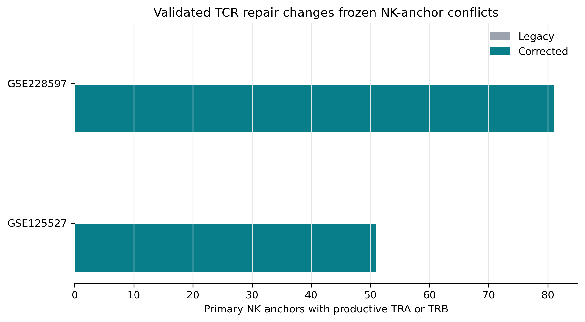
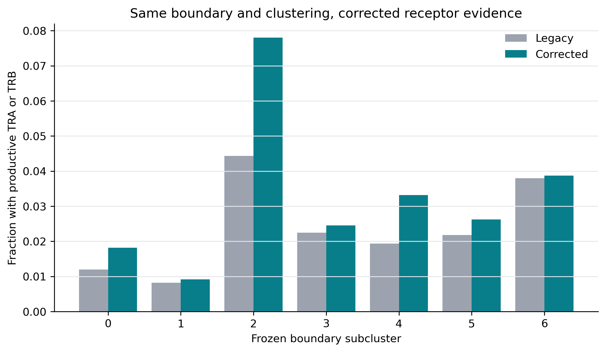
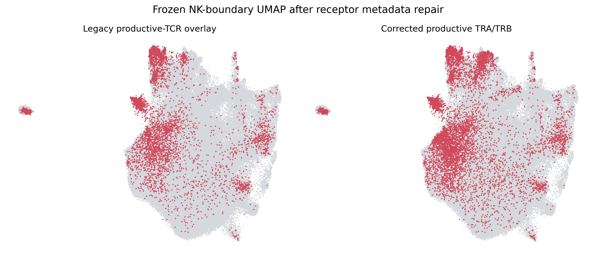

Post-repair TCR truth and NK-boundary audit
Cell membership, scVI, UMAP, boundary definition, and clustering are frozen. Only receptor evidence changed. The prior unsafe harmonized overlay marked 11,526 primary NK anchors and 373,339 boundary cells as alpha-beta TCR-positive; validated repair reduces these to 132 and 14,228.
Primary NK-anchor audit

| Source | Primary NK | Legacy AB | Corrected AB | Corrected no TCR |
|---|---|---|---|---|
| GSE125527 | 3,547 | 0 | 51 | 3,496 |
| GSE228597 | 17,507 | 0 | 81 | 17,426 |
Frozen boundary by subcluster

Boundary UMAP

The corrected overlay uses validated productive TRA/TRB calls. Lack of TRD remains uninformative for alpha-beta-only VDJ libraries.
Truth reconstruction
Gold gdT includes sorted-gdT cells plus paired TRG/TRD cells without alpha-beta TCR. Gold abT requires paired TRA/TRB, no gamma-delta TCR, and no overlap with gdT gold. Silver positives are not used.
gdT gold: 58,822; abT gold: 1,926,136; strict receptor gdT: 33,586; dual TCR: 14,890; rule conflicts: 0.
Decision
This audit determines whether the previous NK-reference exclusions were driven by faulty receptor joins. Only dual-annotation NK anchors with no corrected productive TCR are eligible for the next training review. No model was trained or promoted, and the canonical atlas was not switched.